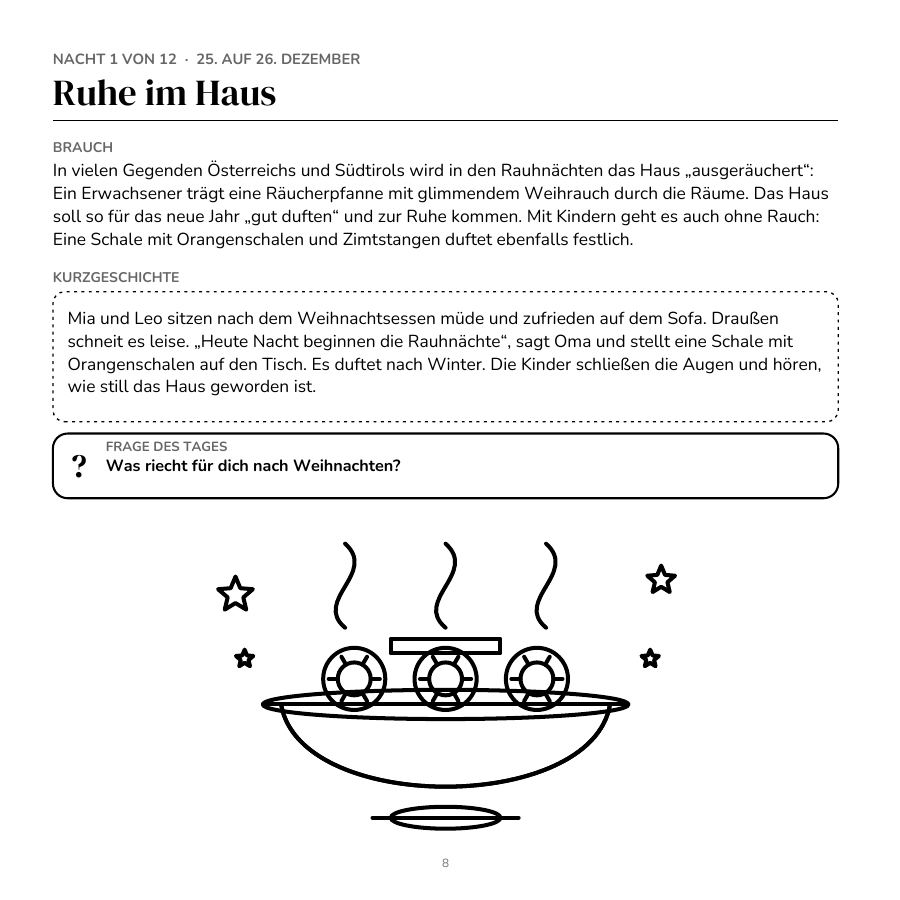
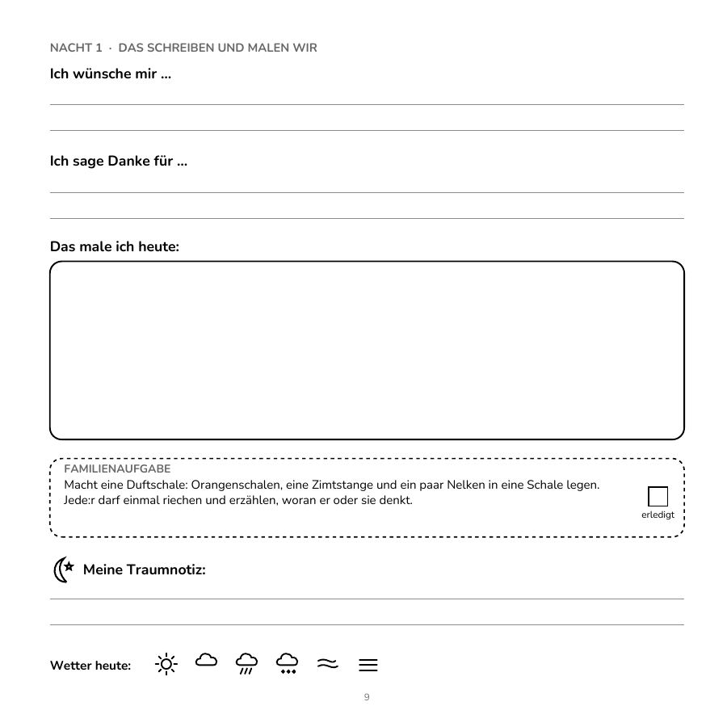
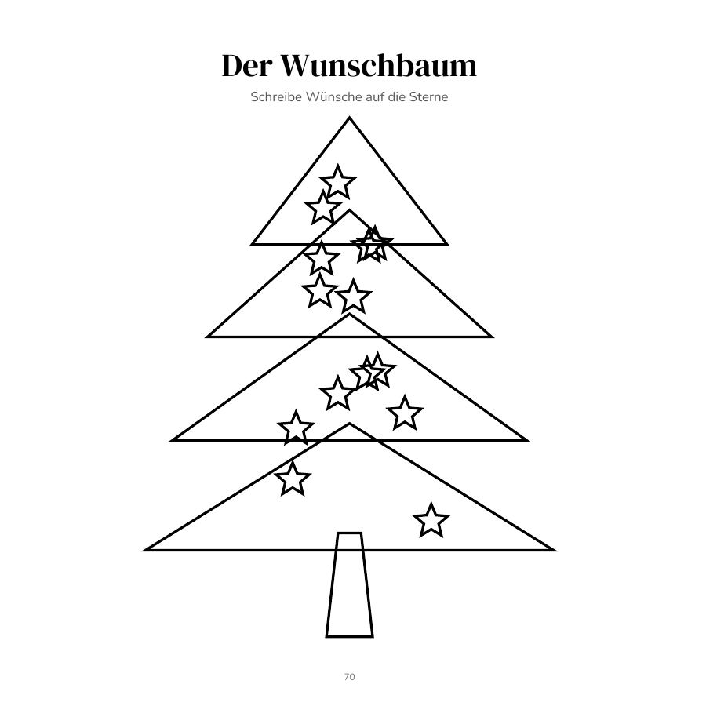
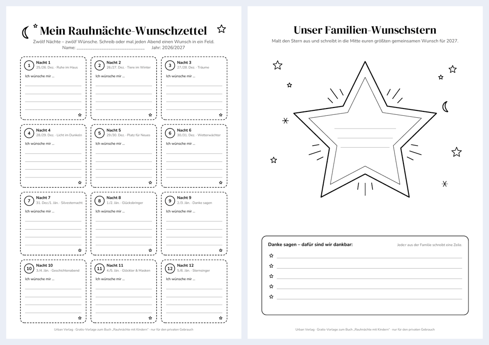

Das Familien-Mitmachbuch für die 12 Nächte
Brauchtum aus Österreich & Südtirol zum Vorlesen, Ausmalen und Eintragen – Geschichten, Wünsche, Rätsel & Bastelideen für Familien
Zwischen Weihnachten und dem 6. Jänner wird es still und gemütlich: die Rauhnächte. Dieses Mitmachbuch begleitet Familien durch alle zwölf Nächte – mit Brauchtum aus Österreich und Südtirol, kurzen Geschichten zum Vorlesen, einer Frage für jeden Abend und viel Platz zum Ausmalen, Zeichnen und Eintragen.
Hinweis: Ohne Esoterik-Zwang und mit Respekt vor dem Brauchtum – jede Familie entscheidet selbst, was zu ihr passt. Die kurzen Geschichten sind erfunden; Bräuche werden vorsichtig und regional unterschiedlich beschrieben.
Das erwartet euch
- 12 Nächte, je eine Doppelseite: links ein Brauch, eine Kurzgeschichte, die Frage des Tages und ein Ausmalmotiv; rechts Wünsche und Dank, ein Zeichenfeld, die Familienaufgabe und eine Traumnotiz
- Zu jeder Nacht eine Spiel- oder Bastelseite (Labyrinth, Buchstabenrätsel oder Mitmach-Idee) und ein Mandala
- Für Eltern: eine kurze Einleitung zu den Rauhnächten, Sicherheitshinweise und ein kleines Wörterbuch
- Wetter-Beobachtungstabelle und Wetterjahr 2027 – das Beobachtungsspiel der Lostage
- Jahresrückblick 2026, Wünsche für 2027, Wunschbaum und ein Brief an die Familie von morgen
- Bastelvorlagen, Wunschkarten, Rauhnächte-Bingo, Gesprächskarten, Fotoseiten und Notizen – und zum Schluss eine Urkunde für die ganze Familie
Die Themen der zwölf Nächte:
- 1. Ruhe im Haus
- 2. Tiere im Winter
- 3. Träume
- 4. Licht in der Dunkelheit
- 5. Platz für Neues
- 6. Wetterwächter
- 7. Silvesternacht
- 8. Glücksbringer
- 9. Danke sagen
- 10. Geschichtenabend
- 11. Glöckler und Masken
- 12. Sternsinger
Blick ins Buch
Drei Originalseiten aus dem Innenteil – zum Vergrößern antippen.



Gratis zum Ausdrucken

Rauhnächte-Wunschzettel
Zwölf Nächte – zwölf Wünsche: Auf Seite 1 schreibt oder malt ihr jeden Abend einen Wunsch in ein Feld. Seite 2 ist ein großer Familien-Wunschstern zum Ausmalen, mit Platz für den größten gemeinsamen Wunsch und eine Danke-Liste.
Tipp: In Schwarz-Weiß auf A4 drucken („tatsächliche Größe“). Für den privaten Gebrauch – bitte nicht weiterverkaufen.